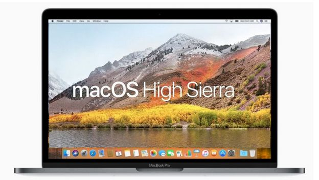
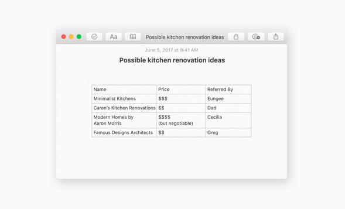
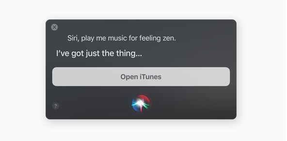
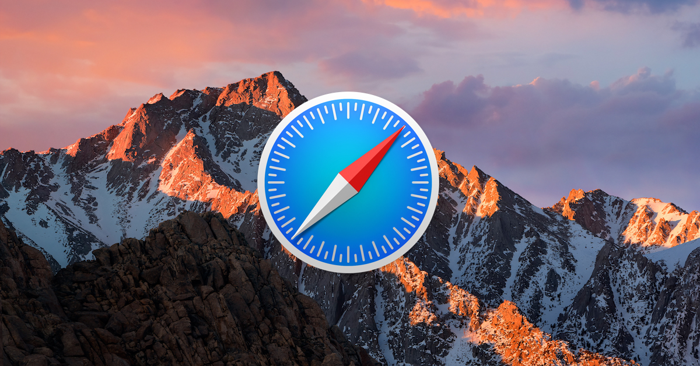
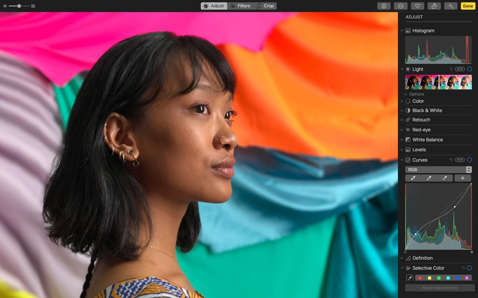

macOS High Sierra
Apple el día 5 de junio de 2017, presentó en la WWDC 2017, la actualización del nuevo sistema operativo macOS, sucesor del sistema anterior Sierra, también presentó otras cosas destacadas, como el nuevo IOS, nuevo iMac Pro, y la renovación de los MackBook, Apple cada año no deja de sorprendernos pues este no fue la excepción.

NOVEDADES DEL SISTEMA
- Puedes compartir almacenamiento de iCloud, y ahora Apple a incluido nuevos paquetes, uno de ellos tiene hasta 2 TB de memoria.
- Puedes incluir tablas en Notas
- Ahora en Facetime podrás capturar momentos (fotos) al instante.
- Tus mensajes estarán a salvo, ya que se gurdarán en iCloud también.
- iCloud Drive, permitirá poder compartir archivos con tus amigos.
- Siri ahora podrá ser tu DJ personal.
- Safari es aún más rápido que Crome.
- Safari incluye una nueva mejora, permitirá al lector tener una mejor lectura, a la hora de leer un artículo, quitará todo tipo de anuncios para que sea mejor visible la información.
- Safari también impedirá que te salgan videos molestos con sonido.
- Fotos incluye Live Photos, podrás ahora editar tus fotos de manera profesional.




Estás son algunas de las más destacadas novedades que traerá consigo el nuevo macOS High Sierra, que estará disponible en Otoño de este año.
Apple lanzará la BETA para los desarrolladores, y también para el público en general de este sistema operativo a finales del mes de junio del presente año.
DISPOSITIVOS COMPATIBLES
2010 y posteriores
- MackBook Air
- MackBook Pro
- Mac mini
- Mac Pro
Finales de 2009 y posteriores
- MackBook
- iMac